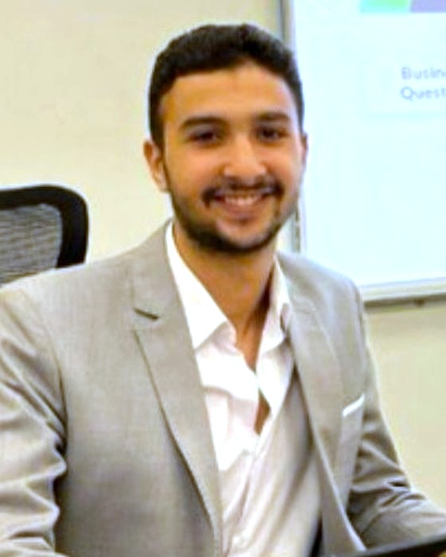
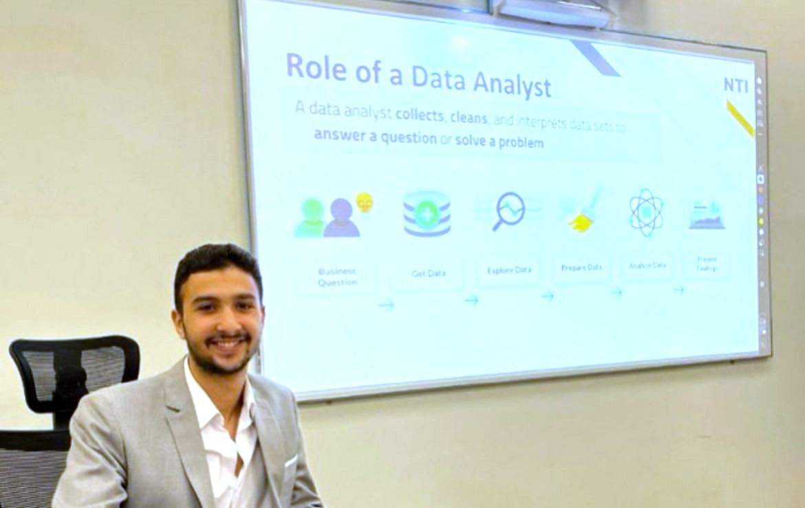

Generative AI & Prompt Engineering
How LLMs work, structured prompting, evaluation, and using GenAI tools for everyday productivity.
OpenAI APIHugging FaceTransformers
Agentic AI & AI Automation Instructor
I teach engineers, students and professionals to design AI agents and automate real business workflows with LLMs, RAG, n8n and UiPath. My lectures are built from systems I ship in production, including a national recruitment platform for the Ministry of Labor of Oman.

Each session opens with a real task: a lead list, an inbox, a pile of CVs.
The model, tool or pattern needed, explained once and clearly.
I build the workflow live in n8n, Python or UiPath, mistakes included.
Learners rebuild and extend it with guided checkpoints.
A working agent or automation each learner can demo and keep.
Learners finish with deployable work, not slides. Projects are reviewed on the same criteria I use in client work: does it run unattended, handle errors, and save measurable time?

Delivered as bootcamps, corporate workshops or university modules, in Arabic or English.
How LLMs work, structured prompting, evaluation, and using GenAI tools for everyday productivity.
The Python a practitioner actually needs: APIs, data handling, and calling models from code.
Webhooks, API orchestration, batching and error handling. Learners build a CRM-synced outreach pipeline end to end.
Process automation with the RE Framework, plus an AI agent that reads, summarises and files incoming email.
Chunking, embeddings and vector search. Learners build an assistant that answers from a live, refreshed document source.
Tool use, memory, planning and handoffs between agents, and how to put agents into production safely.
National programmes, training institutes and international platforms. Most recent first.
| Sep 2026 – present | Samsung Innovation Campus (SIC)Current Agentic AI & Automation Instructor Teaching AI automation and AI agent development to programme participants. |
| Sep 2026 – Oct 2026 | Digital Egypt Pioneers Initiative (DEPI) AI Automation Instructor · AI & Automation industry track Trained participants on Generative AI tools, AI agent concepts and practical automation workflows. |
| Jul 2024 – present | National Telecommunication Institute (NTI)Current Generative AI Instructor Generative AI tools, Python for AI development and AI automation, taught through applied projects and real case studies. |
| 2024 – present | MYSTRO GmbH, Germany (remote) Agentic AI Instructor Designed and delivered an 11-module curriculum on AI tools, prompt engineering, Agentic AI and workflow automation. Trained 100+ international students. |
| Nov 2024 – Jan 2025 | AMIT Learning Generative AI & Automation Instructor Guided professionals in building AI-powered dashboards, reports and automation solutions. |
| Nov 2024 – Dec 2024 | Arabian Academy AI Agent Instructor Generative AI and automation sessions, mentoring students through practical projects. |
| Jul 2024 – Oct 2024 | Orange Digital Center Egypt AI Instructor Designed and delivered AI training for 50+ students, mentoring projects from idea to working prototype. |
These production systems are the case studies my learners work through.
Led the build for the Ministry of Labor of Oman: LLM CV summarisation and semantic job matching with vector embeddings.
Success Technology LLC · Oman · 2025–202616 dynamic email templates, smart batching, a live Brevo tracking webhook and GPT lead classification synced to a Sheets CRM.
UniStep · Saudi Arabia · 2025–2026Internal recruitment platform with ML candidate recommendations and workforce analytics dashboards.
Andalusia Group for Medical Services · Egypt · 2025An n8n + Pinecone assistant over live Drive documents, and an Egyptian Labor Law chatbot in progress with the Ministry of Labor.
Independent & government projects · 2026Available for training programmes, corporate upskilling and university modules, on-site in Egypt or remote worldwide.